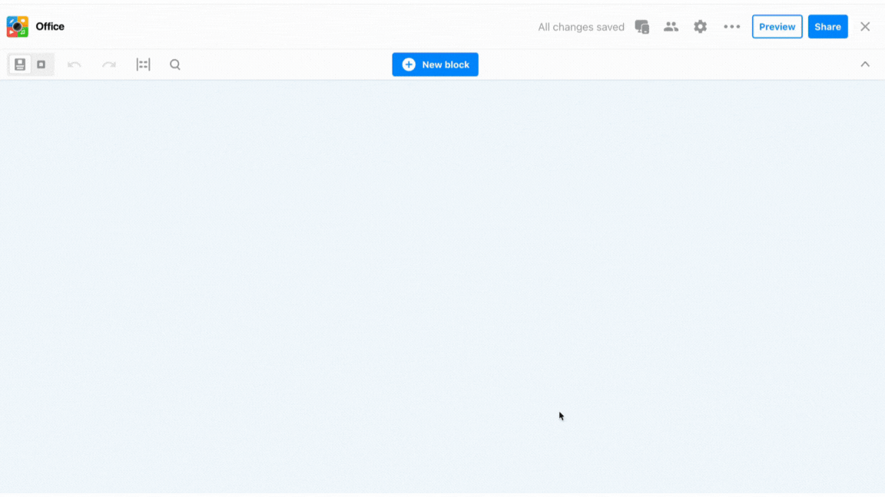

HALLOWEEN · ESCAPE ROOM
Build your Halloween escape room
Build your Halloween escape room in ThingLink Scenario Builder. Give players clues they can use to solve each question.
Explore a finished escape room
Find a clue. Notice how it helps answer a question.
Your Halloween escape room:
- 4+ story scenes, including a start and two endings: escape / do not escape.
- 2+ decision points with questions or puzzles. Each answer leads to a consequence.
- 1 scene in 360° that is part of the route.
Branching blocks connect the scenes; they do not count as extra story scenes.
1. Build your escape room
Use your approved map. Create the scenes with Text or Media. In Media, choose Upload or select a scene to include your 360° image.

Add a question with Branching → Simple branching. Connect each answer to a scene. Show the clue before asking for the answer.

Connect every route and test both answers.

Replay the tutorial
Use readable text. Describe important images and include captions or a transcript for audio or video.
2. Have a partner play
- Share the link. Your partner must test every route, both endings, and the 360° scene.
- Ask where they got confused. Improve a clue, answer, connection, or access problem.
- Test the changed route again.
Partner stem: I understood ___. I needed more information about ___.
3. Share and submit
Share → Share link → Copy

Test the link with a partner. In Canvas, choose Start Assignment → Website URL, paste the link, and submit. If sharing is unavailable, ask your teacher for the class fallback.
In a Canvas submission comment, answer:
- Which choice changes the story most, and how?
- What did your partner find, what did you change, and what happened when you tested again?
Sentence stems: Choosing ___ leads to ___. My partner noticed ___. I changed ___. When we tested again, ___.
Word bank: clue = information that helps · consequence = what a choice changes · revise = improve after testing.
Rubric: 100 points
Plan and story structure, choice and consequence, technical navigation, audience and accessibility, testing and revision: 20 points each. See the Canvas rubric.
HALLOWEEN · ESCAPE ROOM
Construye tu escape room de Halloween
Construye tu escape room de Halloween en ThingLink Scenario Builder. Da pistas que ayuden a resolver cada pregunta.
Explora un escape room terminado
Abrir escape room en otra pestaña
Busca una pista. Mira cómo ayuda a responder una pregunta. El ejemplo está en inglés.
Tu escape room de Halloween:
- 4+ escenas, con un inicio y dos finales: escapar / no escapar.
- 2+ decisiones con preguntas o acertijos. Cada respuesta lleva a una consecuencia.
- 1 escena de 360° que forme parte del recorrido.
Los bloques Branching conectan las escenas; no cuentan como escenas extra.
1. Construye tu escape room
Usa tu mapa aprobado. Crea las escenas con Text o Media. En Media, elige Upload or select a scene para incluir tu imagen de 360°.
Añade una pregunta con Branching → Simple branching. Cada respuesta debe llevar a una escena. Muestra la pista antes de pedir la respuesta.
Conecta todos los caminos y prueba ambas respuestas.
Repasar el tutorial
Usa texto fácil de leer. Describe las imágenes importantes y añade subtítulos o una transcripción para el audio o video.
2. Pide a un compañero que juegue
- Comparte el enlace. Tu compañero debe probar todos los caminos, los dos finales y la escena de 360°.
- Pregunta dónde se confundió. Mejora una pista, respuesta, conexión o problema de acceso.
- Vuelve a probar el camino que cambiaste.
Para comentar: Entendí ___. Necesité más información sobre ___.
3. Comparte y entrega
Share → Share link → Copy
Prueba el enlace con un compañero. En Canvas, elige Start Assignment → Website URL, pega el enlace y entrega. Si no puedes compartir, pide a tu maestro la alternativa de la clase.
En un comentario de Canvas, responde:
- ¿Qué decisión cambia más la historia y cómo?
- ¿Qué encontró tu compañero, qué cambiaste y qué pasó al probar de nuevo?
Frases de apoyo: Elegir ___ lleva a ___. Mi compañero notó ___. Cambié ___. Al probar de nuevo, ___.
Banco de palabras: clue = pista · consequence = resultado de una decisión · revise = mejorar después de probar.
Rúbrica: 100 puntos
Plan y estructura, decisión y consecuencia, navegación, público y accesibilidad, pruebas y revisión: 20 puntos cada categoría. Consulta la rúbrica de Canvas.

Photo: Zdeněk Macháček / Unsplash